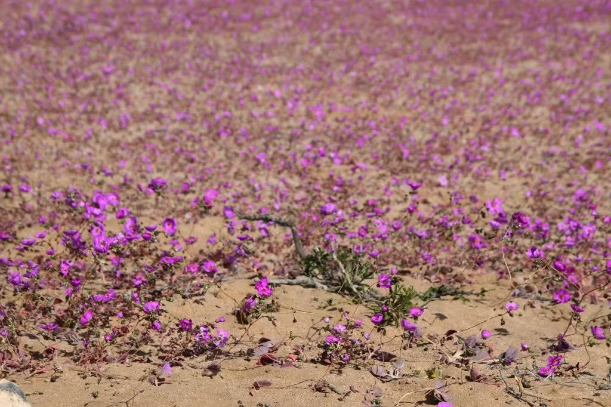

Chuvas incomuns fazem deserto do Atacama florescer; FOTOS
Cientistas investigam se mudanças climáticas estão relacionadas com o fenômeno. O aparecimento
de flores na região não é comum para esta época do ano.
Por France Presse
11/07/2024
.jpeg)
Flores no Deserto do Atacama em 10 de julho de 2024 — Foto: Lopez Castillo/AFP
O deserto do Atacama, o mais árido do planeta, encheu-se de flores em uma extensão de vários quilômetros, graças às chuvas incomuns registradas nessa parte do norte do Chile. Veja fotos mais abaixo.
O fenômeno, que não era observado nesta época do ano desde 2015, surpreendeu turistas e moradores de localidades próximas, que se acostumaram nos últimos anos com esse espetáculo, mas não antes de setembro.
"A chuva de 11, 12 milímetros que caiu em abril, somada a uma nebulosidade baixa intensa na região, que molha todas as noites essas superfícies, ajudou na ativação
dessas plantas", explicou à AFP César Pizarro, da Corporação Nacional Florestal.
O especialista ressaltou que o fenômeno não tem relação com o chamado Deserto Florido, que ocorre na primavera. Enquanto aquela paisagem se estende por 15 mil km², as flores de agora apareceram em uma área bem menor, de 300 a 400 km².
Quando o Deserto Florido acontece em seu esplendor, mais de 200 espécies de plantas florescem. Agora, a principal protagonista tem sido a "pata de guanaco", uma flor arroxeada que precisa de pouca água e prefere terrenos arenosos.
O alcance da floração precoce está sendo analisado. Os cientistas ainda não determinaram se "o que ocorreu no inverno de 2015 e 2024 tem relação direta com as mudanças climáticas ou com os fenômenos El Niño e La Niña", disse Pizarro.
FOTOS
Flores no deserto do Atacama
